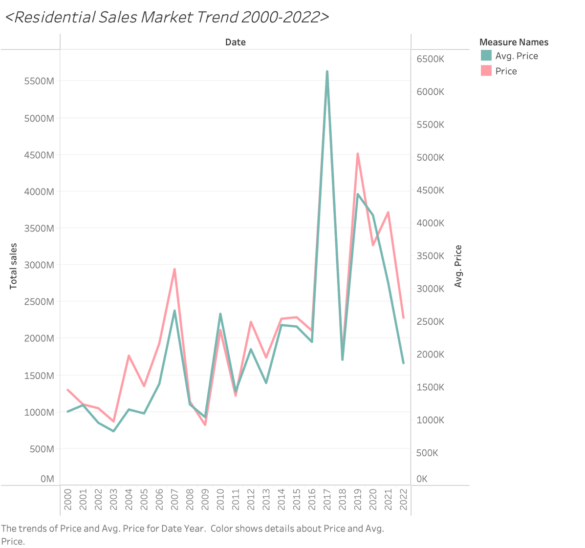
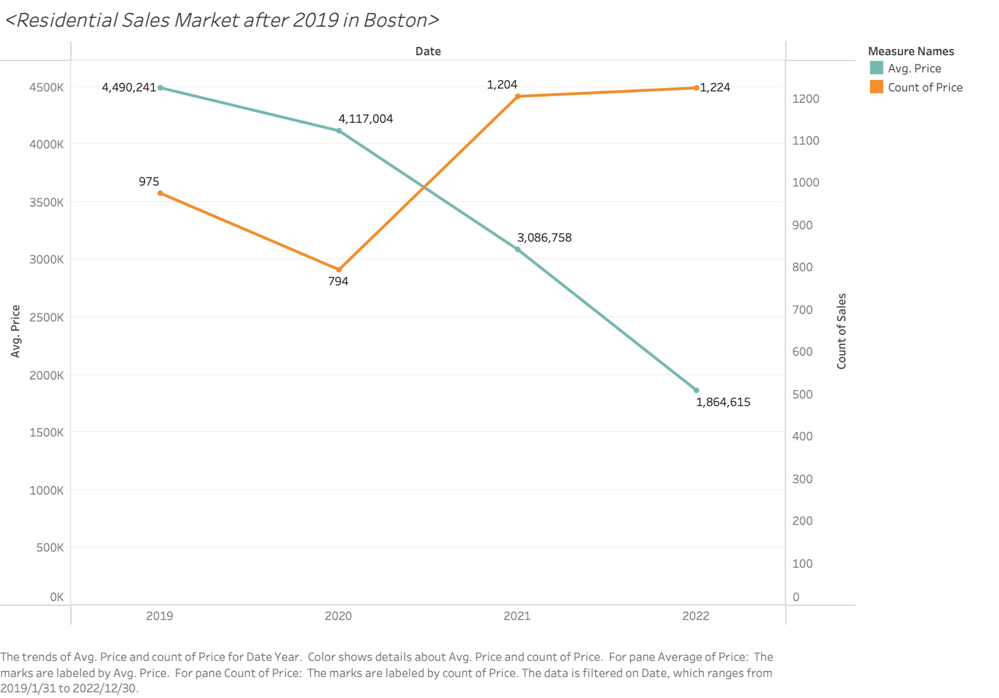
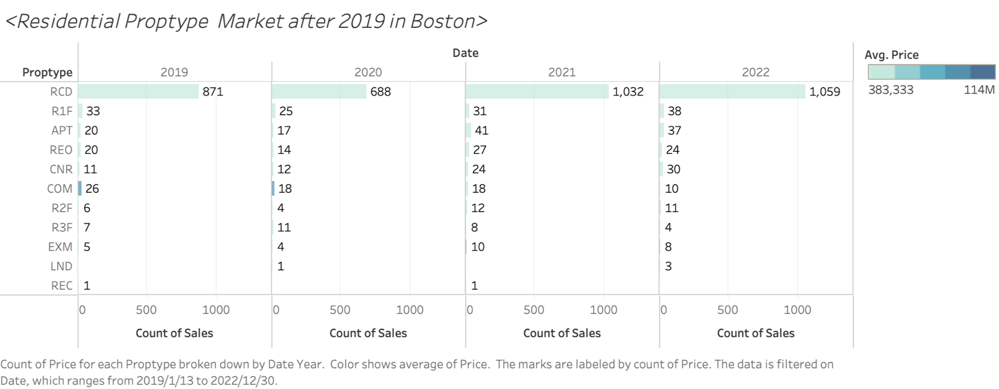
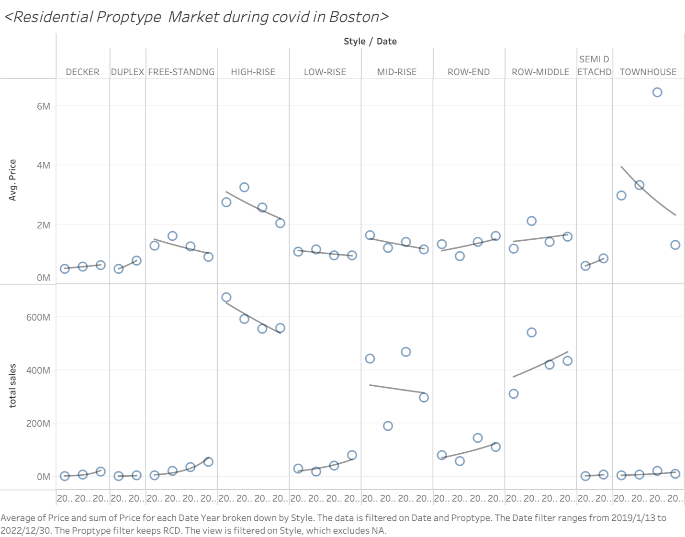
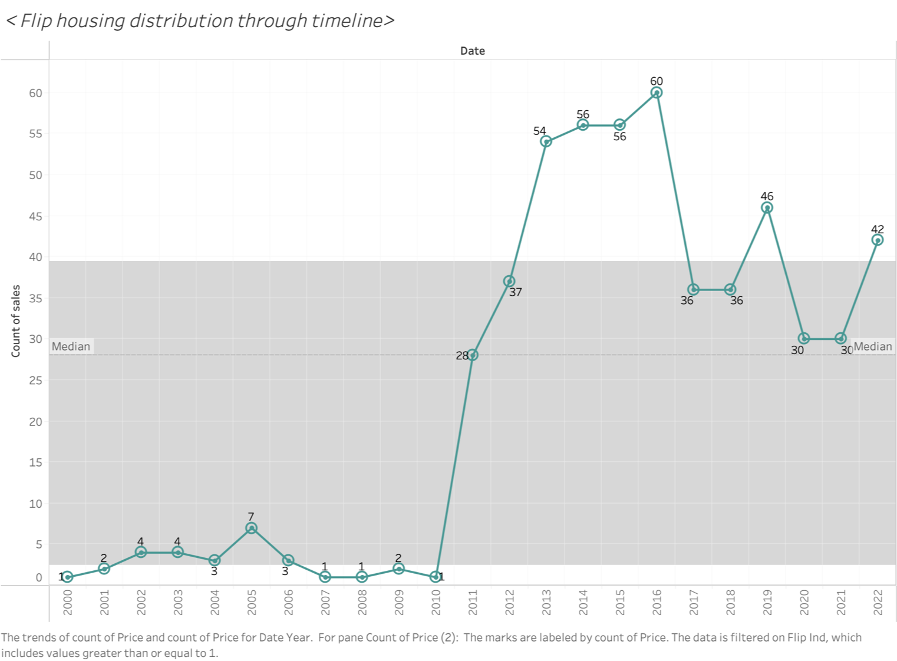
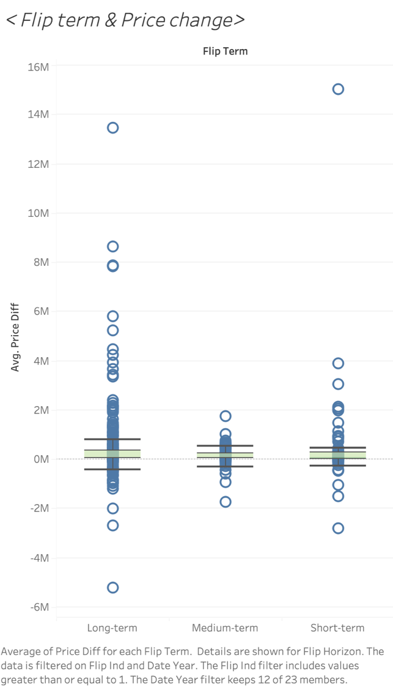

Subtheme: Residential Sales Analysis in Bosto(2000-2022)
Overall Analysis Questions
- What are the recent changes in the Boston Residential Sales market over the past few years?
- Analysis of speculative behavior in the Boston Residential Sales market (housing flips).
- What characteristics determine higher values for houses in Boston?
- ...
data cleaning
Before data analytics and data visualization, we cleaned the dataset including the steps as below:_ The zip code for 35 Queensberry St #1 is 02215, not 02251.
_ The zip code for 40 Battery St #PH4 is 02109, not 02209.
_ The zip code for 154 W Newtown St is 02118, not 02218.
_ The zip code for 483 Beacon St #74 is 02115, not 02214.
_ The zip code for 1140 Washington St #2F is 02124, not 02024.
Discoveries & Insights
Question1: Recent changes in the Boston Residential Sales market over the past few years
Our first step is to examine our data set. From the year 2000 to the end of 2022, the Boston residential sales market exhibited significant fluctuations, both in terms of the unit sale price and the total transaction volume, especially between 2016 and 2019. However, both aspects showed similar patterns of fluctuation until 2019, after which (especially by 2021) they began to exhibit different trends of fluctuation. Taking into account the context of COVID, we will mainly focus on exploring the changes in the Boston Residential Sales market between 2019 and 2022.
By setting the datedate as a filter criterion, we have visualized the changes in transaction volume and unit transaction price in the sales market from 2019 to 2022 through Tableau. Among these changes, the unit price has been on a decline, while transaction volume has increased due to the impact of price, which essentially still aligns with the supply and demand balance of the housing market. As for the decline in the unit price of home sales, a current subjective speculation is that it may be due to the impact of COVID-19 leading to economic downturn and a decrease in purchasing power for houses. However, more data is needed to predict causality.
By analyzing the transaction situation of housing types(proptype) over the past 4 years through Tableau, we can see that in terms of transaction volume, RCD-type houses have performed outstandingly, accounting for more than 85% of the total housing market transactions each year, with a total of 3,650 transactions over four years, while the transaction volume for other types of houses has generally remained within the double digits.
First of all, we filtered out RCD type houses and conducted further detailed studies on them through style subdivision. The upper half of Fig.4 shows the average sale price of different residential types, while the lower half displays the total sales revenue. As can be seen from the chart, different types of residences have different trends in price and sales revenue between 2019 to 2022. For example, the average sale price and total sales revenue of high-rise type houses show a downward trend over time; the decker type houses' average sale price and total sales revenue remain relatively stable; whereas the free-standing type houses' average sale price and total sales revenue show the opposite trend…
Faced with such varied trends, we could analyze and interpret them from two perspectives. As real estate merchants (investors), they might look for property types with potential for appreciation. In this chart, if a certain type of property shows a steady upward trend in average price, even though the total sales volume might decline, this could indicate that the market value of that property type is rising. Therefore, we would preliminarily recommend investment in Decker, Duplex, row-end, and semi-detached properties. (Though Townhouses also meet the criteria, it should be noted that they have significant price fluctuations, hence carrying a certain degree of risk.)
Conversely, as individual homebuyers, they usually consider price stability and affordability. Thus, we would recommend types that have a relatively lower average price or show a declining trend, which might indicate that these types of houses are currently more affordable. If the total sales volume also shows a declining trend, this could further suggest that there is an abundance of market supply, potentially giving buyers more room to negotiate. Combining this with this chart, we would preliminarily recommend high-rise and mid-rise to individual buyers, of course, further consideration should be given to individual usage needs.
Question2: Analysis of speculative behavior in the Boston Residential Sales market (housing flips).
By conducting preliminary analysis calculations using R, we analyze the profit value using (price_diff/price), and the median profit margin for flipping houses in Boston is approximately 21%. Next, we proceed with a timeline analysis: we first use flip_ind = 1 as a filter condition, and analyze the number of transactions identified as house flipping on Boston's housing transaction market over the past 20 years (from 2000-2022) in the form of a timeline chart. It is evident that the volume of house-flipping transactions was in the single digits from 2000 to 2010 (part of reasons may due to insufficient data collection). Starting from 2011, the volume of transactions aimed at house flipping began to increase significantly, reaching a peak in 2016 (with a transaction volume of 60); whereas in the subsequent six years, it continued to fluctuate and decline. Therefore, our further analysis will focus on the years 2011 to 2022 going forward.
This chart shows the relationship between the length of the trading cycle (long-term, mid-term, and short-term) and the change in transaction prices within Boston's house flipping activities. It indicates that the duration of the trading cycle indeed affects the price changes in property transactions, especially as long-term and short-term trading cycles are more likely to experience extreme price fluctuations. However, the majority of transactions exhibit relatively small changes in price, with the median close to zero. This may suggest that in the Boston market, unless one can capitalize on specific market opportunities, predicting price changes based solely on the duration of the trading cycle may not be sufficient to generate significant profits.
This chart shows how different types of properties influence the profit margins (difference between initial and final transaction prices) in Boston's house flipping market. It concludes that property type significantly impacts flipping profits, with types like APT, COM, and R1F displaying high profit potential, whereas RCD types offer limited profit margins. Overall, while some properties exhibit high profitability, the majority show modest gains, and the risks of flipping vary markedly by property type. Investors should consider these factors and assess market dynamics and risks accordingly.

Question3: What characteristics determine higher values for houses in Boston?
Summary
WRITE FINAL SUMMARY HERE.